Explanation: According to Bohr’s quantization
rule, angular momentum of an electron is \(mvr =
\dfrac{nh}{2\pi}\). For the ground state of hydrogen atom,
\(n=1\). So the angular momentum becomes \(\dfrac{h}{2\pi}\),
which on calculation gives approximately \(1.055 \times
10^{-34}\text{ J s}\), or \(1055 \times 10^{-37}\text{ J s}\).
Step-by-step explanation:
This is a direct formula-based question from Bohr’s atomic
model.
In Bohr theory, the allowed angular momentum values are
quantized: \(\displaystyle mvr = \frac{nh}{2\pi}\)
For hydrogen atom in the ground state, the
principal quantum number is: \(\displaystyle n=1\)
So, \(\displaystyle mvr = \frac{1 \times h}{2\pi}\)
Substitute the given value of Planck’s constant:
\(\displaystyle mvr = \frac{6.625 \times 10^{-34}}{2 \times
3.14}\)
Now calculate: \(\displaystyle mvr \approx \frac{6.625
\times 10^{-34}}{6.28}\)
This gives: \(\displaystyle mvr \approx 1.055 \times
10^{-34}\text{ J s}\)
Rewrite this in the form used in the options:
\(\displaystyle 1.055 \times 10^{-34} = 1055 \times
10^{-37}\text{ J s}\)
Hence, option (c) is correct.
Concept used / theory behind it:
Bohr proposed that electrons can revolve only in certain
permitted circular orbits.
In these allowed orbits, angular momentum is quantized and
cannot take arbitrary values.
The rule is: \(\displaystyle mvr = \frac{nh}{2\pi}\)
This means angular momentum depends only on \(n\), the orbit
number.
For first orbit: \(\displaystyle mvr = \frac{h}{2\pi}\)
For second orbit: \(\displaystyle mvr = \frac{2h}{2\pi}\)
And so on.
This is one of the most standard results of Bohr model and
is frequently asked in objective exams.
Why the correct option is right:
Option (c) exactly matches the numerical value obtained from
Bohr’s formula for \(n=1\).
The calculated value is \(1.055 \times 10^{-34}\text{ J
s}\), which is the same as \(1055 \times 10^{-37}\text{ J
s}\).
Why the other options are wrong or less suitable:
(a) and (b) are too large
compared to \(\dfrac{h}{2\pi}\).
(d) equals \(1.055 \times 10^{-33}\text{ J
s}\), which is ten times larger than the correct value.
The most common trap here is exponent handling, not
chemistry or physics theory.
Exam tip / shortcut / elimination clue:
Memorize this standard result: \(\displaystyle
\frac{h}{2\pi} \approx 1.055 \times 10^{-34}\text{ J s}\)
Whenever you see
ground state of hydrogen and
angular momentum, directly think:
\(\displaystyle n=1 \Rightarrow \frac{h}{2\pi}\)
If options are written in unusual exponent form, rewrite
carefully before choosing.
Final result: The approximate angular momentum
of electron in hydrogen atom in ground state is
\(1055 \times 10^{-37}\text{ J s}\).
Chapter / topic / subtopic: Atomic Structure /
Bohr’s Model / Quantization of angular momentum.
Explanation: The energy of electron in the
\(n\)th orbit of hydrogen atom is given by \(E_n =
-\dfrac{R_H}{n^2}\). So for \(n=1\), \(n=2\), and \(n=3\), the
energies are in the ratio \(\dfrac{1}{1} : \dfrac{1}{4} :
\dfrac{1}{9}\). On converting this into whole numbers, the ratio
becomes \(36 : 9 : 4\).
Step-by-step explanation:
This question uses the standard energy formula for hydrogen
atom.
For the \(n\)th orbit: \(\displaystyle E_n =
-\frac{R_H}{n^2}\)
Now write energies for the three given orbits:
\(\displaystyle E_1 = -R_H\)
\(\displaystyle E_2 = -\frac{R_H}{4}\)
\(\displaystyle E_3 = -\frac{R_H}{9}\)
So the ratio is: \(\displaystyle E_1 : E_2 : E_3 = 1 :
\frac{1}{4} : \frac{1}{9}\)
To remove fractions, multiply all terms by \(36\):
\(\displaystyle 36 : 9 : 4\)
Hence, option (c) is correct.
Concept used / theory behind it:
In Bohr’s theory, the energy of electron in hydrogen-like
species depends on orbit number \(n\).
The formula is: \(\displaystyle E_n =
-\frac{13.6}{n^2}\text{ eV}\) or equivalently
\(\displaystyle E_n = -\frac{R_H}{n^2}\)
The negative sign shows that the electron is bound to the
nucleus.
As \(n\) increases, the energy becomes less negative,
meaning the electron is less tightly held.
For ratio questions, the constant and the negative sign do
not change the final option, because the proportional part
is \(\dfrac{1}{n^2}\).
Why the correct option is right:
Option (c) is the exact integer form of the ratio
\(\displaystyle 1 : \frac{1}{4} : \frac{1}{9}\).
Multiplying by \(36\) gives \(36 : 9 : 4\), so it matches
perfectly.
Why the other options are wrong or less suitable:
(a) and (b) do not follow
the \(\dfrac{1}{n^2}\) dependence.
(d) is a simple descending number pattern
but has no relation to the hydrogen energy formula.
This question often traps students who remember only that
energy decreases with \(n\), but forget the exact square
relation.
Exam tip / shortcut / elimination clue:
For hydrogen atom:
energy \(\propto \dfrac{1}{n^2}\)
So for \(n=1,2,3\), immediately write: \(\displaystyle
1,\frac{1}{4},\frac{1}{9}\)
Then take LCM \(=36\) to get an integer ratio quickly:
\(\displaystyle 36:9:4\)
Final result: The required ratio is
\(36 : 9 : 4\).
Chapter / topic / subtopic: Atomic Structure /
Bohr’s Model / Energy of electron in hydrogen atom.
Explanation: Metallic character increases as
the tendency to lose electrons increases, or in simple terms, as
ionisation enthalpy decreases. Across a period it generally
decreases from left to right, while down a group it generally
increases. Based on the positions of Sn, Cd, Zr, and Sr in the
periodic table, the increasing order of metallic character is
\(Sn < Cd < Zr < Sr\).
Step-by-step explanation:
This is a periodic table trend question.
We compare metallic character by asking:
Which atom loses electrons more easily?
More easily losing electrons means more metallic nature.
Now look at the positions:
\(Sn\) is in group 14
\(Cd\) is in group 12
\(Zr\) is in group 4
\(Sr\) is in group 2
All are in the same broad region of the periodic table, and
as we move from right to left in a period, metallic
character increases.
Among these, \(Sr\) is the most electropositive and most
metallic.
\(Zr\) is next.
\(Cd\) is less metallic than \(Zr\).
\(Sn\), being further to the right and more p-block in
character, is the least metallic among these four.
So the order is: \(Sn < Cd < Zr < Sr\)
Concept used / theory behind it:
Metallic character means the tendency of an element to lose
electrons and form cations.
It is closely related to:
low ionisation enthalpy
high electropositive nature
larger atomic size
General periodic trend:
Across a period from left to right, metallic character
decreases.
Down a group, metallic character increases.
Group 2 elements are strongly metallic.
p-block metals like \(Sn\) are metallic, but usually less
metallic than strongly electropositive s-block metals like
\(Sr\).
Why the correct option is right:
Option (a) follows the correct periodic trend and matches
the known metallic behavior of these elements.
\(Sr\) is the most metallic and \(Sn\) the least metallic
among the given set.
Why the other options are wrong or less suitable:
(b) wrongly places \(Sr\) below \(Cd\) and
\(Zr\), even though \(Sr\) should be the most metallic.
(c) incorrectly places \(Sn\) as the most
metallic, which is clearly wrong.
(d) again makes \(Sn\) more metallic than
the others, which does not fit periodic trends.
Exam tip / shortcut / elimination clue:
For metallic character, think:
left and down = more metallic
If an alkaline earth metal like \(Sr\) appears with
transition and p-block metals, it is often among the most
metallic choices.
If a p-block element like \(Sn\) appears in comparison with
\(Sr\), it usually lies lower in metallic character.
Final result: The correct order is
\(Sn < Cd < Zr < Sr\).
Chapter / topic / subtopic: Classification of
Elements and Periodicity / Periodic Trends / Metallic character.
Explanation: Out of the given molecules, the
central atom has one lone pair in \(PbCl_2\), \(PH_3\),
\(SF_4\), and \(SnCl_2\). In \(ClF_3\), the central atom has two
lone pairs, and in \(BF_3\), the central atom has no lone pair.
So the total number is 4.
Lewis dot structures considered:
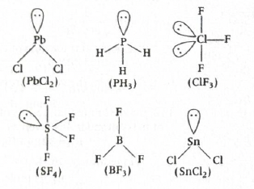
Step-by-step explanation:
This is a lone-pair counting question based on Lewis
structures and VSEPR idea.
We check each compound one by one.
\(PbCl_2\): Lead is the central atom and
has one lone pair. So this counts.
\(PH_3\): Phosphorus has 5 valence
electrons. It forms 3 bonds with hydrogen and keeps 1 lone
pair. So this counts.
\(ClF_3\): Chlorine has 7 valence
electrons. After making 3 bonds with fluorine, 4 electrons
remain on chlorine, that is 2 lone pairs.
So this does not count.
\(SF_4\): Sulfur forms 4 bonds and keeps 1
lone pair. So this counts.
\(BF_3\): Boron forms 3 bonds and has no
lone pair on the central atom. So this does not count.
\(SnCl_2\): Tin has one lone pair on the
central atom. So this counts.
Therefore, the molecules with exactly one lone pair are:
\(PbCl_2\)
\(PH_3\)
\(SF_4\)
\(SnCl_2\)
Total \(=4\).
Concept used / theory behind it:
To find lone pairs on a central atom, count the valence
electrons of the central atom first.
Then subtract the electrons used in bonding.
The remaining electrons are arranged as lone pairs.
This is the same idea used in Lewis structure drawing and
VSEPR theory.
Quick patterns to remember:
\(PH_3\) is like \(NH_3\) in having one lone pair.
\(SF_4\) has trigonal bipyramidal electron geometry with
one lone pair, giving seesaw shape.
\(ClF_3\) has five electron pairs around chlorine, of
which two are lone pairs, giving T-shape.
\(BF_3\) is electron-deficient and has no lone pair on
boron.
Why the correct option is right:
Only four molecules in the list have exactly one lone pair
on the central atom.
Those are \(PbCl_2\), \(PH_3\), \(SF_4\), and \(SnCl_2\).
So option (b) is correct.
Why the other options are wrong or less suitable:
(a) 3 is too small because it misses one
among \(PbCl_2\), \(PH_3\), \(SF_4\), or \(SnCl_2\).
(c) 1 is clearly incorrect after checking
the structures one by one.
(d) 2 is also too small and ignores
multiple valid molecules.
The main trap is \(ClF_3\). Many students wrongly count it
as having one lone pair, but it actually has two.
Exam tip / shortcut / elimination clue:
When a list of molecules is given, do not guess from shapes
alone.
Count central-atom electrons carefully.
Remember these common results:
\(PH_3\) → 1 lone pair
\(SF_4\) → 1 lone pair
\(ClF_3\) → 2 lone pairs
\(BF_3\) → 0 lone pair
That already narrows the answer a lot.
Final result: The number of molecules in which
the central atom has one lone pair is 4.
Chapter / topic / subtopic: Chemical Bonding
and Molecular Structure / Lewis Structures and VSEPR Theory /
Lone pair counting on central atom.
Explanation: In \(SF_4\), the central sulfur
atom has one lone pair and its hybridisation is \(sp^3d\), which
involves one \(d\)-orbital. So the number of lone pairs and the
number of \(d\)-orbitals involved are both one.
Step-by-step explanation:
This question asks us to compare two things for each
molecule:
number of lone pairs on the central atom
number of \(d\)-orbitals used in hybridisation of the
central atom
Now check each option one by one.
\(ClF_3\):
Central atom \(Cl\) has 7 valence electrons.
It forms 3 bonds with fluorine, leaving 2 lone pairs.
Hybridisation is \(sp^3d\), so one \(d\)-orbital is
involved.
Comparison: lone pairs \(=2\), \(d\)-orbitals \(=1\).
Not same.
\(PCl_5\):
Central atom \(P\) forms 5 bonds and has no lone pair.
Hybridisation is \(sp^3d\), so one \(d\)-orbital is
involved.
Comparison: lone pairs \(=0\), \(d\)-orbitals \(=1\).
Not same.
\(BrF_5\):
Central atom \(Br\) forms 5 bonds and has 1 lone pair.
Hybridisation is \(sp^3d^2\), so two \(d\)-orbitals are
involved.
Comparison: lone pairs \(=1\), \(d\)-orbitals \(=2\).
Not same.
\(SF_4\):
Central atom \(S\) forms 4 bonds and has 1 lone pair.
Hybridisation is \(sp^3d\), so one \(d\)-orbital is
involved.
Explanation: When gas \(B\) is added, total
pressure rises from 5 atm to 10 atm, so gas \(B\) alone
contributes 5 atm. Since both gases are in the same vessel at
the same temperature, pressure is proportional to number of
moles. Using \(p = \dfrac{w}{M}\dfrac{RT}{V}\) for each gas, we
get \(\dfrac{4}{M_A} = \dfrac{16}{M_B}\), which gives \(M_B =
4M_A\).
Step-by-step explanation:
For gas \(A\):
mass \(= 4\text{ g}\)
pressure \(= 5\text{ atm}\)
temperature \(= 300\text{ K}\)
volume \(= V\)
After introducing gas \(B\), total pressure becomes
\(10\text{ atm}\).
So pressure due to gas \(B\) alone is: \(p_B = 10 - 5 =
5\text{ atm}\)
Now use ideal gas equation in the form: \(pV = nRT =
\dfrac{w}{M}RT\)
For gas \(A\): \(5 = \dfrac{4}{M_A}\dfrac{RT}{V}\)
For gas \(B\): \(5 = \dfrac{16}{M_B}\dfrac{RT}{V}\)
Since the left side is same in both equations, compare the
right sides: \(\dfrac{4}{M_A}\dfrac{RT}{V} =
\dfrac{16}{M_B}\dfrac{RT}{V}\)
Explanation: In addition, the result cannot
have more decimal places than the number having the least
decimal places. Among 12.0, 19.034 and 2.0143, the least number
of decimal places is 1. Their sum is \(33.0483\), which must be
rounded to one decimal place as \(33.0\). The number \(33.0\)
has 3 significant figures.
Step-by-step explanation:
First add the three numbers: \(12.0 + 19.034 + 2.0143 =
33.0483\)
Now apply the rule for addition and subtraction of measured
quantities.
In addition, the final answer should have the same number of
decimal places as the term with the fewest decimal places.
Check each term:
\(12.0\) has 1 decimal place
\(19.034\) has 3 decimal places
\(2.0143\) has 4 decimal places
So the final result must be rounded to
1 decimal place.
Thus, \(33.0483 \approx 33.0\)
Now count significant figures in \(33.0\):
3 is significant
3 is significant
the trailing 0 after decimal is also significant
So total significant figures \(= 3\).
Concept used / theory behind it:
Significant figure rules depend on the type of operation.
For addition and subtraction, the deciding
factor is decimal places, not total
significant figures.
For multiplication and division, the
deciding factor is the number of significant figures.
This distinction is very important in exam questions.
Also remember:
trailing zeros after a decimal point are significant
so \(33.0\) has 3 significant figures
Why the correct option is right:
The raw sum is \(33.0483\), but it cannot be kept as such.
Because 12.0 has only one decimal place, the final answer
must be \(33.0\).
\(33.0\) contains 3 significant figures, so option (d) is
correct.
Why the other options are wrong or less suitable:
(a) 2 ignores the significance of the zero
after the decimal point in \(33.0\).
(b) 5 incorrectly counts the unrounded sum.
(c) 4 also ignores the correct rounding
rule for addition.
Exam tip / shortcut / elimination clue:
For addition or subtraction, first check
least decimal places.
Do not count significant figures before rounding.
Here the shortcut is:
least decimal places \(=1\)
sum \(=33.0483\)
round to \(33.0\)
significant figures \(=3\)
Final result: The number of significant figures
in \(X\) is 3.
Chapter / topic / subtopic: Some Basic Concepts
of Chemistry / Significant Figures / Addition and rounding
rules.
Explanation: Intensive properties do not depend
on the amount of matter present. Among the listed properties,
molar volume, temperature, and density are intensive, whereas
mass, internal energy, volume, and enthalpy are extensive
properties.
Step-by-step explanation:
This question is based on the difference between
intensive and
extensive properties.
Intensive properties are those which do
not depend on the amount of substance.
Extensive properties are those which
do depend on the amount of substance.
Now check each item:
I. Molar volume → intensive, because it
is volume per mole.
II. Mass → extensive, because it
increases with amount.
III. Internal energy → extensive,
because more substance means more total internal energy.
IV. Volume → extensive.
V. Enthalpy → extensive.
VI. Temperature → intensive.
VII. Density → intensive.
So the intensive properties are:
I, VI, VII only.
Concept used / theory behind it:
Intensive properties remain the same even if the sample size
changes.
Examples:
temperature
pressure
density
molar volume
Extensive properties depend on the amount or size of the
sample.
Examples:
mass
volume
internal energy
enthalpy
A useful idea is that if a property is “total amount of
something,” it is usually extensive.
If it is a ratio or state property independent of sample
size, it is often intensive.
Why the correct option is right:
Option (a) contains exactly the three intensive properties
from the list:
molar volume
temperature
density
So it matches the concept perfectly.
Why the other options are wrong or less suitable:
(b) includes volume, which is extensive.
(c) includes internal energy, volume, and
enthalpy, all of which are extensive.
(d) includes mass, internal energy, and
enthalpy, which are all extensive, not intensive.
Exam tip / shortcut / elimination clue:
Think:
intensive = independent of amount
Quick memory rule:
mass, volume, energy, enthalpy → usually extensive
temperature, density, molar quantities → usually
intensive
If a property doubles when sample amount doubles, it is
extensive.
Final result: The intensive properties are
I, VI, VII only.
Chapter / topic / subtopic: Thermodynamics /
System Properties / Intensive and extensive properties.
Explanation: First, the given reaction has
\(K_c = 50\). To obtain the required reaction, we must reverse
the reaction and also multiply the coefficients by 3. Reversing
makes the equilibrium constant reciprocal, and multiplying
coefficients by 3 raises the equilibrium constant to the power
3. So the required value is \(\left(\dfrac{1}{50}\right)^3 = 8
\times 10^{-6}\).
Step-by-step explanation:
The given reaction is: \(\dfrac{1}{3}N_2(g) + H_2(g)
\rightleftharpoons \dfrac{2}{3}NH_3(g)\)
Its equilibrium constant is: \(K_c = 50\)
Now compare this with the required reaction: \(2NH_3(g)
\rightleftharpoons N_2(g) + 3H_2(g)\)
To convert the given reaction into a more familiar form,
multiply the given equation by 3: \(N_2(g) + 3H_2(g)
\rightleftharpoons 2NH_3(g)\)
When all stoichiometric coefficients are multiplied by 3,
the new equilibrium constant becomes: \(K_c' = (50)^3\)
But the reaction asked in the question is the
reverse of this: \(2NH_3(g)
\rightleftharpoons N_2(g) + 3H_2(g)\)
On reversing a reaction, the equilibrium constant becomes
the reciprocal.
Explanation: Statement A is true because during
photosynthesis water loses electrons and gets oxidised to
oxygen. Statement C is also true because sodium
hexametaphosphate is used to remove permanent hardness of water.
Statement B is false because \(MgH_2\) is not an interstitial
hydride; it has appreciable covalent character.
Step-by-step explanation:
This is a statement-based mixed-concept question.
We must check each statement separately.
Statement A: In photosynthesis, water acts
as the electron donor and is oxidised to oxygen. So this
statement is true.
Statement B: \(MgH_2\) is not an
interstitial hydride. Interstitial hydrides are generally
formed by transition metals, where hydrogen occupies
interstitial spaces in the metal lattice. \(MgH_2\) does not
belong to this category. So this statement is false.
Statement C: Sodium hexametaphosphate is
used in the removal of permanent hardness of water. It acts
by complexing with \(Ca^{2+}\) and \(Mg^{2+}\) ions. So this
statement is true.
Hence only A and C are correct.
Concept used / theory behind it:
Photosynthesis:
Water is oxidised to oxygen.
Carbon dioxide is reduced to carbohydrates.
So oxygen evolved in photosynthesis comes from water,
not from carbon dioxide.
Hydrides:
Interstitial hydrides are formed mainly by \(d\)-block
metals.
Examples are hydrides of transition metals such as
\(Ti\), \(Pd\), etc.
\(MgH_2\) is better treated as a salt-like or
covalent-character hydride, not interstitial.
Water hardness:
Permanent hardness is caused by chlorides and sulphates
of calcium and magnesium.
Sodium hexametaphosphate, also called Calgon, removes
permanent hardness by sequestering these ions.
Why the correct option is right:
Option (d) contains exactly the true statements: A and C.
It correctly excludes B, which is false.
Why the other options are wrong or less suitable:
(a) is wrong because it includes B, which
is false.
(b) is wrong because B is false and C is
actually true.
(c) is wrong because it includes B and
excludes A.
Exam tip / shortcut / elimination clue:
Remember these quick facts:
photosynthesis: \(H_2O \rightarrow O_2\) by oxidation
Calgon removes permanent hardness
interstitial hydrides belong mainly to transition metals
If you remember that \(MgH_2\) is not a transition-metal
interstitial hydride, the answer becomes easy.
Final result: The correct statements are
A and C only.
Chapter / topic / subtopic: s-Block Elements
and Hydrogen / Hydrides and Water Hardness / Basic biological
redox process in photosynthesis.
Correct answer: (a) Molecular formula of calgon is
\(NaAlSiO_4\). s-Block Elements TTR
Explanation: This statement is incorrect
because calgon is sodium hexametaphosphate, whose formula is
\((NaPO_3)_6\), not \(NaAlSiO_4\).
Step-by-step explanation:
The question asks for the
incorrect statement.
Let us inspect each option.
(a) says calgon has formula \(NaAlSiO_4\).
This is wrong. Calgon is
sodium hexametaphosphate, and its formula
is: \((NaPO_3)_6\)
So option (a) is the incorrect statement.
(b) is true because beryllium halides have
appreciable covalent character and therefore are soluble in
organic solvents.
(c) is also true in aqueous solution
because the reducing behavior depends on several factors
including hydration enthalpy, and sodium is least reducing
among alkali metals in aqueous medium.
(d) is accepted as correct in this exam
context.
Concept used / theory behind it:
Calgon:
Calgon is sodium hexametaphosphate.
Formula: \((NaPO_3)_6\)
It is used in removing permanent hardness of water.
Beryllium halides:
Due to the small size and high polarising power of
\(Be^{2+}\), beryllium halides show strong covalent
character.
That is why they dissolve in organic solvents.
Reducing nature in aqueous solution:
In water, the trend depends not only on ionisation
enthalpy but also on hydration enthalpy.
This modifies the simple metallic trend.
Why the correct option is right:
Option (a) is wrong because it gives the wrong formula for
calgon.
The actual formula is \((NaPO_3)_6\), so (a) is the
statement that is not correct.
Why the other options are wrong or less suitable:
(b) is correct due to covalent nature of
beryllium halides.
(c) is correct in aqueous solution context.
(d) is not the incorrect statement expected
by this question.
Explanation: On heating, lithium nitrate
behaves differently from other alkali metal nitrates and
decomposes like alkaline earth metal nitrates. It forms
lithium oxide, nitrogen dioxide, and oxygen.
Step-by-step explanation:
This is a memory-based but very important decomposition
reaction from s-block chemistry.
Lithium nitrate on heating decomposes according to:
\(4LiNO_3 \xrightarrow{\Delta} 2Li_2O + 4NO_2 + O_2\)
So the products formed are:
\(Li_2O\)
\(NO_2\)
\(O_2\)
Therefore option (d) is correct.
Concept used / theory behind it:
Lithium often behaves differently from the other alkali
metals because of its:
small size
high charge density
greater polarising power
Because of this diagonal relationship, lithium resembles
magnesium in many reactions.
That is why lithium nitrate decomposes like alkaline
earth metal nitrates, giving oxide, \(NO_2\), and
\(O_2\).
In contrast, nitrates of other alkali metals usually
give nitrites and oxygen on heating.
Why the correct option is right:
Option (d) contains exactly the products obtained from
thermal decomposition of \(LiNO_3\).
It matches the balanced reaction: \(4LiNO_3
\xrightarrow{\Delta} 2Li_2O + 4NO_2 + O_2\)
Why the other options are wrong or less suitable:
(a) contains \(LiO_2\), which is not
the product here.
(b) contains \(N_2O\), which is not
formed in this decomposition.
(c) contains \(N_2\), which is also
incorrect.
The key point is that the nitrogen product is \(NO_2\),
not \(N_2\) or \(N_2O\).
Exam tip / shortcut / elimination clue:
Remember the special rule:
\(LiNO_3\) is exceptional among alkali metal
nitrates.
Think: \(LiNO_3 \rightarrow Li_2O + NO_2 + O_2\)
Other alkali nitrates usually give: \(\text{nitrite} +
O_2\)
This difference is a favorite exam question.
Final result: Thermal decomposition of
lithium nitrate gives
\(Li_2O\), \(O_2\), and \(NO_2\).
Chapter / topic / subtopic: s-Block
Elements / Compounds of Lithium / Thermal decomposition of
nitrates.
Explanation: Statements (A) and (B) are
correct, but statements (C) and (D) are incorrect. Aluminium
chloride does form a dimer \(Al_2Cl_6\) to reduce electron
deficiency, and \(BCl_3\) is indeed electron deficient. However,
for aluminium, \(E^\circ_{M^{3+}/M}\) is negative, not +1.26 V,
and in thallium the +1 oxidation state is actually more stable
due to the inert pair effect.
Step-by-step explanation
Let us check each statement one by one.
(A) AlCl3 gets stability by forming a
dimer.
This is correct. \(AlCl_3\) is electron deficient in
monomeric form. So two \(AlCl_3\) units combine to form
\(Al_2Cl_6\), where chlorine atoms act as bridges and help
aluminium complete its octet better.
(B) BCl3 is an electron deficient
molecule.
This is also correct. Boron has only 6 electrons around it
in \(BCl_3\), so it does not have a complete octet. That is
why it is called electron deficient.
(C) \(E^\circ_{M^{3+}/M}\) (V) is +1.26 for
aluminium.
This is incorrect. For aluminium, the standard reduction
potential \(E^\circ_{Al^{3+}/Al}\) is negative,
approximately \(-1.66\) V, not positive.
(D) In +1 oxidation state thallium is unstable.
This is incorrect. In fact, for thallium, the +1 oxidation
state is more stable than +3.
Concept used / theory behind it
Group 13 general electronic configuration:
\(ns^2 np^1\).
So the common oxidation state is +3, obtained by losing all
three valence electrons.
But as we move down the group, the \(ns^2\) electron pair
becomes more reluctant to participate in bonding. This is
called the inert pair effect.
Because of this effect, the +1 oxidation state becomes more
stable down the group, especially for thallium.
Thus:
B and Al mainly show +3
Ga and In begin to show +1 also
Tl strongly prefers +1
Also, boron and aluminium halides often show electron
deficiency. \(BCl_3\) remains monomeric, but \(AlCl_3\) can
dimerise to \(Al_2Cl_6\).
Why the correct option is right
The incorrect statements are exactly (C) and (D).
Therefore the correct choice is
(a) C and D only.
Why the other options are wrong
(b) A and B only is wrong because both A
and B are actually true.
(c) A and D only is wrong because A is
true, while D is false.
(d) B and C only is wrong because B is
true, while C is false.
Exam tip / shortcut / elimination clue
Remember two quick facts for group 13:
\(AlCl_3\) forms \(Al_2Cl_6\)
\(Tl^{+}\) is more stable than \(Tl^{3+}\)
Also remember the standard reduction potential of aluminium
is strongly negative, which is why aluminium is a good
reducing metal.
If you see any statement saying \(Tl^{+}\) is unstable, it
is usually false in group 13 chemistry.
Final result
Incorrect statements = (C) and (D) only.
Answer: (a)
Chapter / topic / subtopic
Chapter: p-Block Elements
Topic: Group 13 Elements
Subtopic: Electron deficiency, dimerisation, inert pair
effect, oxidation states
Explanation: Carbon, silicon and germanium all
have giant covalent network structures, but the strength of
covalent bonding decreases down the group. Carbon has the
strongest network, so it has the highest melting point. Silicon
comes next, and germanium has the lowest among these three.
Step-by-step explanation
These three elements belong to group 14.
In their solid forms, C, Si and Ge form extended covalent
networks.
To melt such solids, a very large number of strong covalent
bonds must be broken.
The stronger the covalent network, the higher the melting
point.
Carbon forms an exceptionally strong network because of very
effective \(C-C\) covalent bonding.
As we move down from C to Si to Ge, atomic size increases.
With increasing size, overlap between orbitals becomes less
effective.
So the element-element bonds become weaker:
\(C-C\) strongest
\(Si-Si\) weaker
\(Ge-Ge\) still weaker
Hence the melting temperature order is:
\(C > Si > Ge\)
Concept used / theory behind it
This question is based on
structure-property relationship.
Network covalent solids usually have high melting points
because the entire crystal is held together by strong
covalent bonds.
Among group 14 elements, the non-metallic and metalloid
members at the top show this giant covalent character very
strongly.
Carbon especially, in diamond form, has a rigid
three-dimensional covalent network and therefore an
extremely high melting point.
Down the group, increasing atomic radius weakens bond
strength, so melting point generally falls from C to Si to
Ge.
Why the correct option is right
Option (c) matches the decreasing bond strength trend in the
group:
\(C > Si > Ge\)
Why the other options are wrong
(a) C > Ge > Si is wrong because
silicon has a higher melting point than germanium.
(b) Si > C > Ge is wrong because
carbon has the highest melting point, not silicon.
(d) Si > Ge > C is clearly wrong
because carbon cannot be the lowest here.
Exam tip / shortcut / elimination clue
For network solids in the same group, think:
smaller atom \(\rightarrow\) better overlap
\(\rightarrow\) stronger covalent bond \(\rightarrow\)
higher melting point
So in many top-group network trends, the upper element has
the stronger lattice.
A quick memory line is:
Carbon is king of covalent networks.
Final result
Correct order of melting temperature = \(C > Si >
Ge\).
Answer: (c)
Chapter / topic / subtopic
Chapter: p-Block Elements
Topic: Group 14 Elements
Subtopic: Melting point trend and covalent network structure
Explanation: We must first identify the longest
continuous carbon chain. In this structure, the longest chain
has 6 carbon atoms, so the parent hydrocarbon is hexane. After
numbering the chain to get the lowest set of locants, we find
one ethyl group at carbon 3 and one methyl group at carbon 4.
Substituents are written in alphabetical order, so the correct
IUPAC name is 3-ethyl-4-methylhexane.
Chain selected for IUPAC naming
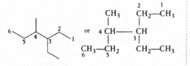
The numbered diagram shows the correct parent chain and the
branching points clearly.
Step-by-step explanation
Step 1: Find the longest chain. Do not
simply look left to right. Trace all possible continuous
paths. The longest continuous chain here contains 6 carbon
atoms.
So the parent name is hexane.
Step 2: Identify the substituents.
One branch is a methyl group \(( -CH_3
)\).
The other branch is an ethyl group \((
-CH_2CH_3 )\).
Step 3: Number the parent chain. Number the
hexane chain from the end that gives the substituents the
lowest possible locants.
That gives:
ethyl at carbon 3
methyl at carbon 4
Step 4: Write substituents in alphabetical order.
In IUPAC naming, alphabetical order matters in the name.
Since ethyl comes before
methyl, the name becomes:
3-ethyl-4-methylhexane
Concept used / theory behind it
This question is from IUPAC nomenclature of alkanes.
The standard order is:
choose longest chain
identify substituents
number for lowest locants
arrange substituents alphabetically
A very common trap is to choose a shorter but visually
straighter chain. IUPAC does not care whether the chain
looks straight on paper. It only cares about the maximum
number of carbons in one continuous chain.
Another common trap is to write substituents in the order
they appear in the structure. That is wrong. They must be
written alphabetically.
Why the correct option is right
The parent chain is hexane.
The substituents are ethyl and methyl.
The locants are 3 and 4.
Alphabetical order gives
3-ethyl-4-methylhexane.
Therefore option (c) is correct.
Why the other options are wrong
(a) 3-(2-butyl) pentane is wrong because a
5-carbon parent chain has been selected, but a 6-carbon
chain is available.
(b) 2-(3-pentyl) butane is also wrong
because it chooses an even less suitable parent chain.
(d) 3-methyl-4-ethylhexane has the correct
parent chain and locants, but the substituents are not
written in alphabetical order.
Exam tip / shortcut / elimination clue
In alkane nomenclature, first hunt for the
longest chain. Do that before reading
options carefully.
If two options differ only in the order of substituent
names, remember:
alphabetical order decides the final name
So “ethyl” must come before “methyl”.
Final result
IUPAC name = 3-ethyl-4-methylhexane.
Answer: (c)
Chapter / topic / subtopic
Chapter: Organic Chemistry - Some Basic Principles and
Techniques
Explanation: When the \(\sigma\) electrons of a
C-H bond adjacent to a \(\pi\)-system get delocalised into that
\(\pi\)-system, the effect is called hyperconjugation. In
alkyl-substituted benzene, the C-H bond electrons of the alkyl
group can interact with the benzene ring, so the observed effect
is hyperconjugation.
Delocalisation pattern in alkyl benzene
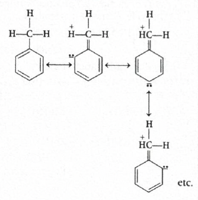
The shown structures illustrate how the benzylic C-H
\(\sigma\)-bond electrons get delocalised toward the
aromatic ring.
Step-by-step explanation
The question talks specifically about
delocalisation of \(\sigma\) electrons of a C-H
bond.
That is the key clue.
Normally, resonance involves delocalisation of \(\pi\)
electrons or lone-pair electrons.
But here the electrons coming into delocalisation are from a
\(\sigma\) bond.
When a C-H \(\sigma\)-bond is adjacent to a multiple bond or
aromatic ring, its electrons can overlap with the nearby
\(\pi\)-system.
This special delocalisation is called
hyperconjugation.
So in alkyl benzene, the alkyl group can donate electron
density to the benzene ring through hyperconjugation.
Concept used / theory behind it
Hyperconjugation is sometimes described as:
\(\sigma\)-\(\pi\) conjugation, or
no-bond resonance
It occurs when a \(\sigma\)-bond, usually C-H attached to
the carbon next to a \(\pi\)-system or vacant p-orbital,
overlaps with that system and allows delocalisation.
Common cases:
alkenes
carbocations
alkyl benzenes
Because of hyperconjugation, alkyl groups show
electron-releasing character toward an aromatic ring and
activate the ring toward electrophilic substitution.
This is one reason alkyl benzenes are more reactive than
benzene toward electrophilic substitution and direct
incoming groups to ortho and para positions.
Why the correct option is right
The question mentions:
delocalisation of \(\sigma\) electrons
from C-H bond
into a benzene \(\pi\)-system
That definition matches
hyperconjugation exactly.
So option (b) is correct.
Why the other options are wrong
(a) Inductive effect is transmission of
electron density through \(\sigma\)-bonds due to
electronegativity differences. It is not delocalisation into
a \(\pi\)-system.
(c) Resonance effect usually involves
delocalisation of \(\pi\) electrons or lone pairs in a
conjugated arrangement. The question is specifically about
\(\sigma\)-bond electrons.
(d) Electromeric effect is a temporary
effect shown in the presence of an attacking reagent in
multiple bonds. That is not what is being described here.
Exam tip / shortcut / elimination clue
Whenever a question says:
C-H \(\sigma\)-bond electrons are delocalised
the answer is almost always
hyperconjugation.
A simple memory trick is:
hyperconjugation = \(\sigma\)-bond helping a
\(\pi\)-system
Final result
The effect observed is hyperconjugation.
Answer: (b)
Chapter / topic / subtopic
Chapter: Organic Chemistry - Some Basic Principles and
Techniques / Hydrocarbons
Topic: Electronic effects in organic chemistry
Subtopic: Hyperconjugation in alkyl-substituted benzene
Explanation: First we reconstruct the alkene
from the ozonolysis products. Acetaldehyde means one carbon of
the double bond had \(CH_3\) and \(H\). Ethyl methyl ketone
means the other carbon of the double bond had \(CH_3\) and
\(C_2H_5\). So the alkene is \(CH_3-CH=C(CH_3)-CH_2-CH_3\). On
addition of HBr, bromine goes to the more substituted carbon by
Markovnikov addition, giving the product shown in option (a).
Reconstructing the alkene from ozonolysis
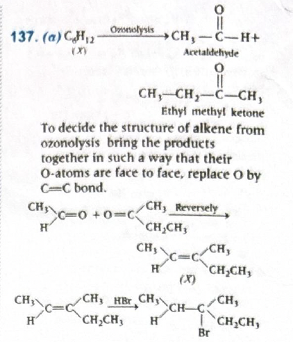
The diagram shows the reverse-thinking method: bring the two
carbonyl compounds together, place the carbonyl carbons face
to face, and replace the two oxygen atoms by a \(C=C\) bond.
Step-by-step explanation
Step 1: Use ozonolysis in reverse.
Ozonolysis cuts a double bond and converts each alkene
carbon into a carbonyl carbon.
One product is acetaldehyde, \(CH_3CHO\).
This tells us that one alkene carbon originally had:
\(CH_3\)
\(H\)
The other product is
ethyl methyl ketone
\((2\text{-butanone})\), \(CH_3COCH_2CH_3\). This tells us
that the second alkene carbon originally had:
\(CH_3\)
\(C_2H_5\)
So the alkene must be:
\(CH_3-CH=C(CH_3)-CH_2-CH_3\)
Step 2: Add HBr to the alkene. In the
normal addition of HBr to an unsymmetrical alkene,
Markovnikov rule applies.
Hydrogen adds to the double-bond carbon which already has
more hydrogens, so that the carbocation forms on the more
substituted carbon.
Here, the carbon containing \(H\) is the left alkene carbon.
So \(H^+\) adds there, and the carbocation forms on the
right alkene carbon, which is more stable because it is more
substituted.
Then \(Br^-\) attacks that carbocation.
Therefore the final product is:
\(CH_3-CH_2-C(Br)(CH_3)-CH_2-CH_3\)
This corresponds to the structure shown in
option (a).
Concept used / theory behind it
Ozonolysis clue: Each carbon of the \(C=C\)
bond becomes a carbonyl carbon after cleavage.
If the product is an aldehyde, that alkene carbon had at
least one hydrogen originally.
If the product is a ketone, that alkene carbon had two
carbon groups attached originally.
HBr addition clue: In the absence of
peroxide, HBr adds by Markovnikov addition.
That means bromine finally ends up on the more substituted
alkene carbon because the reaction proceeds through the more
stable carbocation.
Why the correct option is right
The alkene reconstructed from ozonolysis is
\(CH_3-CH=C(CH_3)-CH_2-CH_3\).
Markovnikov addition of HBr places Br on the more
substituted carbon of the double bond.
That exact product matches option (a).
Why the other options are wrong
The other options place Br on the wrong carbon or represent
a carbon skeleton inconsistent with the alkene obtained from
ozonolysis.
In particular, any option placing Br on the less substituted
alkene carbon would correspond to anti-Markovnikov behavior,
which is not expected here because no peroxide condition is
mentioned.
Some alternatives also distort the original carbon framework
reconstructed from the ozonolysis products.
Exam tip / shortcut / elimination clue
For ozonolysis questions, train yourself to do this quickly:
aldehyde \(\rightarrow\) that alkene carbon had an \(H\)
ketone \(\rightarrow\) that alkene carbon had two carbon
groups
Then simply join the two carbonyl carbons with a double
bond.
After that, for HBr without peroxide, just apply
Markovnikov addition.
Final result
The alkene is \(CH_3-CH=C(CH_3)-CH_2-CH_3\).
On reaction with HBr, the product formed is the one shown in
option (a).
Answer: (a)
Chapter / topic / subtopic
Chapter: Hydrocarbons
Topic: Alkenes
Subtopic: Ozonolysis and electrophilic addition of HBr
Explanation: The first reagent set
\((CrO_2Cl_2/CS_2,\ H_3O^+)\) converts the benzylic methyl group
into an aldehyde group by Etard reaction, giving benzaldehyde.
Then nitration occurs. Since the \(-CHO\) group is strongly
electron withdrawing and meta-directing, the nitro group enters
the meta position. So \(X\) is
3-nitrobenzaldehyde, which is option (d).
Reaction sequence
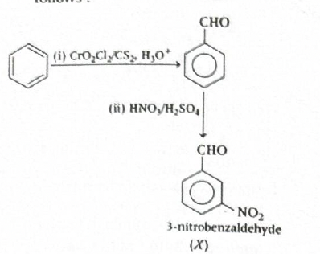
The image shows the key two-step logic: first form
benzaldehyde, then nitrate it to obtain the meta-substituted
product.
Step-by-step explanation
Step 1: Identify the first reaction.
\(CrO_2Cl_2/CS_2\) followed by hydrolysis is the
Etard reaction.
This reaction oxidizes the benzylic methyl group of toluene
to an aldehyde group, not all the way to acid under these
conditions.
So after step (i), the intermediate is:
benzaldehyde, \(C_6H_5CHO\)
Step 2: Apply nitration. Now benzaldehyde
is treated with \(HNO_3/H_2SO_4\), which introduces a nitro
group by electrophilic aromatic substitution.
The \(-CHO\) group is:
electron withdrawing
deactivating
meta-directing
Therefore the nitro group enters at the meta position with
respect to \(-CHO\).
So the final product is:
3-nitrobenzaldehyde
This matches option (d).
Concept used / theory behind it
Etard reaction: Oxidation of the side-chain
methyl group of an alkyl benzene to an aldehyde using
chromyl chloride.
Directive influence of \(-CHO\): The
aldehyde group withdraws electron density by both \(-I\)
effect and \(-M\) effect.
Because of this, ortho and para positions become relatively
less favorable in the sigma-complex formed during
electrophilic substitution.
Hence electrophiles prefer the
meta position in benzaldehyde.
This is a very standard directing-effect question from
aromatic compounds.
Why the correct option is right
Option (d) shows benzaldehyde carrying the
nitro group at the meta position.
That is exactly what is expected after Etard oxidation
followed by nitration.
Why the other options are wrong
(a) shows the acid group \(-CO_2H\), but
Etard oxidation stops at aldehyde, not carboxylic acid.
(b) shows \(-CH_2Cl\), which is not the
product of this reagent sequence.
(c) shows \(-COCl\), an acid chloride,
again unrelated to the given reagents.
Only (d) has the correct functional group
and the correct meta orientation.
Exam tip / shortcut / elimination clue
Memorize this high-yield fact:
\(CrO_2Cl_2/CS_2,\ H_3O^+\) on an alkyl benzene
\(\rightarrow\) aldehyde at the benzylic carbon
Then remember the directing rule:
\(-CHO,\ -COOH,\ -COR,\ -NO_2,\ -CN,\ -SO_3H\) are
generally meta directors
So once benzaldehyde is formed, nitration at meta becomes
the immediate answer.
Explanation: In a cubic close-packed \((ccp)\)
arrangement of oxygen atoms, if the number of oxygen atoms is 4,
then the number of tetrahedral voids is 8 and the number of
octahedral voids is 4. Since \(A\) occupies \(\frac{1}{8}\) of
tetrahedral voids, the number of \(A\) atoms is 1. Since \(B\)
occupies half of octahedral voids, the number of \(B\) atoms is
2. Therefore the ratio \(A:B:O = 1:2:4\), so the formula is
\(AB_2O_4\).
Step-by-step explanation
Step 1: Start with the oxygen lattice.
Oxygen forms a ccp lattice.
Explanation: Since the solution is ideal, we
use Raoult’s law. Because 1 mole of \(A\) is mixed with 1 mole
of \(B\), the liquid-phase mole fractions are \(x_A = 0.5\) and
\(x_B = 0.5\). So the partial pressures are \(p_A = 50 \times
0.5 = 25\) mm Hg and \(p_B = 32 \times 0.5 = 16\) mm Hg. Total
vapour pressure \(= 41\) mm Hg. Therefore the mole fraction of
\(A\) in vapour phase is \(y_A = \frac{25}{41} \approx 0.61\).
Step-by-step explanation
Step 1: Find liquid-phase mole fractions.
Given:
\(n_A = 1\)
\(n_B = 1\)
Total moles in liquid phase:
\(n_A + n_B = 2\)
So:
\(x_A = \frac{1}{2} = 0.5\)
\(x_B = \frac{1}{2} = 0.5\)
Step 2: Apply Raoult’s law.
For an ideal solution:
\(p_A = p_A^\circ x_A\)
\(p_B = p_B^\circ x_B\)
Given:
\(p_A^\circ = 50\) mm Hg
\(p_B^\circ = 32\) mm Hg
Hence:
\(p_A = 50 \times 0.5 = 25\) mm Hg
\(p_B = 32 \times 0.5 = 16\) mm Hg
Step 3: Find total vapour pressure.
\(p_{total} = p_A + p_B = 25 + 16 = 41\) mm Hg
Step 4: Find vapour-phase mole fraction of \(A\).
In vapour phase:
\(y_A = \frac{p_A}{p_{total}}\)
So:
\(y_A = \frac{25}{41} \approx 0.609\)
\(y_A \approx 0.61\)
Thus the correct answer is (d) 0.61.
Concept used / theory behind it
This question is based on
ideal solutions and
Raoult’s law.
For an ideal solution, each component obeys:
\(p_i = p_i^\circ x_i\)
The total vapour pressure is:
\(p_{total} = p_A + p_B\)
The mole fraction in vapour phase is not usually the same as
the mole fraction in liquid phase.
The more volatile component contributes more to vapour.
Since \(A\) has higher vapour pressure \((50\text{ mm Hg})\)
than \(B\) \((32\text{ mm Hg})\), \(A\) becomes richer in
the vapour phase.
That is why \(y_A\) becomes greater than \(x_A\).
Why the correct option is right
The correct numerical value is:
\(y_A = \frac{25}{41} \approx 0.61\)
So option (d) is the only matching answer.
Why the other options are wrong
0.50 would be wrong because equal liquid
moles do not imply equal vapour mole fractions unless the
pure vapour pressures are also equal.
0.39 is actually close to the vapour-phase
mole fraction of \(B\), not \(A\).
0.25 is much too small and does not come
from the correct Raoult’s law calculation.
Exam tip / shortcut / elimination clue
For ideal solution MCQs, remember this quick route:
first find \(x_A\) and \(x_B\)
then calculate partial pressures
then use \(y_A = \frac{p_A}{p_A + p_B}\)
Also, if one component has larger pure vapour pressure, its
vapour-phase mole fraction will be larger than its
liquid-phase mole fraction when mixed in equal amounts.
Final result
Mole fraction of \(A\) in vapour phase \(=\)
0.61.
Answer: (d)
Chapter / topic / subtopic
Chapter: Solutions
Topic: Ideal solutions and Raoult’s law
Subtopic: Vapour pressure and vapour-phase composition
Explanation: First find the standard cell
potential for the reaction. Since \(B^+/B\) has the higher
reduction potential, \(B^+\) gets reduced and \(A\) gets
oxidised. Therefore \(E^\circ_{cell} = 0.5 - (-0.5) = 1.0\ V\).
Now use the relation \(E^\circ_{cell} = \dfrac{2.303RT}{nF}\log
K_c\). Here \(n=1\), so \(1.0 = 0.06\log K_c\). Hence \(\log K_c
= \dfrac{1.0}{0.06} = \dfrac{100}{6}\).
Once \(E^\circ_{cell}\) is positive and as large as \(1.0\
V\), you should immediately expect \(K_c\) to be very large,
so \(\log K_c\) must also be a large positive number.
Final result
\(\log K_c = \dfrac{100}{6}\)
Answer: (b)
Chapter / topic / subtopic
Chapter: Electrochemistry
Topic: Electrode potential and equilibrium constant
Subtopic: Relation between \(E^\circ_{cell}\) and \(K_c\)
Explanation: For a zero order reaction, the
integrated rate law is \((A) = (A)_0 - kt\). So a plot of
\((A)\) versus \(t\) gives a straight line whose slope is \(-k\)
and intercept is \((A)_0\). Since the given slope is \(-3 \times
10^{-3}\ M\ min^{-1}\), the rate constant is \(k = 3 \times
10^{-3}\ M\ min^{-1}\).
Step-by-step explanation
For a zero order reaction, the integrated equation is:
\((A) = (A)_0 - kt\)
This is in the form of a straight line:
\(y = c + mx\)
Comparing:
\(y \equiv (A)\)
\(x \equiv t\)
intercept \(= (A)_0\)
slope \(= -k\)
The question gives:
slope \(= -3 \times 10^{-3}\ M\ min^{-1}\)
Therefore:
\(-k = -3 \times 10^{-3}\)
\(k = 3 \times 10^{-3}\ M\ min^{-1}\)
The y-intercept \(2 \times 10^{-2}\ M\) represents the
initial concentration \((A)_0\), but it is not needed to
calculate \(k\) here.
Concept used / theory behind it
In a zero order reaction, the rate is
independent of reactant concentration.
So:
Rate \(= k\)
After integration:
\((A) = (A)_0 - kt\)
This means concentration decreases linearly with time.
That is why the graph of \((A)\) vs \(t\) is a straight
line.
A very standard memory point is:
zero order \(\rightarrow\) slope of \((A)\) vs \(t\)
graph \(= -k\)
Why the correct option is right
The slope directly gives \(-k\).
Since slope \(= -3 \times 10^{-3}\), the rate constant must
be:
\(k = 3 \times 10^{-3}\ M\ min^{-1}\)
So option (a) is correct.
Why the other options are wrong
The other options do not match the magnitude of the slope.
Some are smaller by a factor of 10 or more.
This is a direct graph-based zero-order question, so there
is almost no calculation beyond reading the slope correctly.
Exam tip / shortcut / elimination clue
Memorize the graph identities:
zero order: \((A)\) vs \(t\), slope \(=-k\)
first order: \(\log(A)\) vs \(t\), slope \(=-k/2.303\)
second order: \(1/(A)\) vs \(t\), slope \(=+k\)
This one-line memory trick saves a lot of time in MCQs.
Explanation: The correct matching is obtained
by identifying each colloid-related term carefully. A negatively
charged sol is obtained when \(FeCl_3\) is added to excess NaOH
because the sol adsorbs \(OH^-\) ions. Milk is an emulsion. Gold
number is related to the protection of colloids. Colloidal
antimony is used in the treatment of kala azar. Therefore the
correct match is A-III, B-I, C-IV, D-II.
Key colloid associations
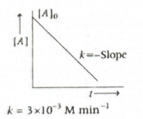
The image summarises the four standard colloid facts tested
in this matching question.
Step-by-step explanation
A. Negatively charged sol \(\rightarrow\) III
When \(FeCl_3\) solution is added to excess NaOH solution,
hydrated ferric oxide sol is formed and it adsorbs \(OH^-\)
ions from the medium.
Because of adsorption of \(OH^-\), the sol becomes
negatively charged.
So:
A \(\rightarrow\) III
B. Milk \(\rightarrow\) I
Milk is a classic example of an emulsion.
It consists of tiny fat droplets dispersed in water.
So:
B \(\rightarrow\) I
C. Gold number \(\rightarrow\) IV
Gold number measures the
protective power of a lyophilic colloid
toward a lyophobic sol.
So it is directly connected with protection of colloids.
Hence:
C \(\rightarrow\) IV
D. Colloidal antimony \(\rightarrow\) II
Colloidal antimony has been used in the treatment of
kala azar.
Therefore:
D \(\rightarrow\) II
Concept used / theory behind it
This is a direct memory-based
surface chemistry / colloids question.
Still, it helps to understand the ideas:
a sol gets charge due to adsorption of ions
an emulsion is liquid dispersed in liquid
gold number tells how well a protective colloid
stabilises a colloidal system
some colloids have medicinal applications
Such questions often mix everyday examples, medical
applications, and theory terms in one match-the-following
format.
Why the correct option is right
We obtained:
A \(\rightarrow\) III
B \(\rightarrow\) I
C \(\rightarrow\) IV
D \(\rightarrow\) II
This matches exactly with option (b).
Why the other options are wrong
The other options mix up at least one of the standard
colloid facts.
Especially high-yield pairs to remember are:
milk \(\rightarrow\) emulsion
gold number \(\rightarrow\) protection of colloids
colloidal antimony \(\rightarrow\) kala azar
Once those are fixed, only one option survives.
Exam tip / shortcut / elimination clue
In colloids matching questions, first lock the easiest
pairs:
milk \(\rightarrow\) emulsion
gold number \(\rightarrow\) protective power
Then only two matches remain, making the question much
faster.
Final result
Correct matching \(=\) A-III, B-I, C-IV, D-II
Answer: (b)
Chapter / topic / subtopic
Chapter: Surface Chemistry
Topic: Colloids
Subtopic: Charge on sols, emulsion, gold number, medicinal
applications of colloids
Explanation: The reaction shows silver reacting
with cyanide in the presence of oxygen and water to form a
soluble dicyanoargentate complex. This is the cyanide process
used to dissolve silver from the ore. Such extraction by a
suitable reagent that makes the metal soluble while impurities
remain behind is called leaching.
Here silver is converted into a
soluble complex ion:
\((Ag(CN)_2)^-\)
This means silver is selectively dissolved out from the ore
using a chemical reagent.
The reagent here is cyanide solution, and the process is
known as the cyanide process.
In metallurgy, when the desired metal or metal compound is
dissolved into a suitable reagent and separated from
insoluble gangue, the method is called
leaching.
Concept used / theory behind it
Leaching is a concentration method based on
selective solubility.
The powdered ore is treated with a reagent that dissolves
the valuable component but leaves the unwanted impurities
behind.
For silver and gold, cyanide forms soluble complexes:
\((Ag(CN)_2)^-\)
\((Au(CN)_2)^-\)
This is why cyanide leaching is an important extraction
method for noble metals.
Why the correct option is right
The reaction clearly shows formation of a soluble silver
cyanide complex.
That is the hallmark of leaching.
So option (a) is correct.
Why the other options are wrong
Levigation is concentration based on
washing away lighter impurities by a stream of water.
Froth floatation is mainly used for
sulphide ores based on difference in wettability.
Liquation is used when one component melts
easily and can be separated by heating.
None of these involve dissolving silver as a cyanide
complex.
Exam tip / shortcut / elimination clue
Whenever you see \(CN^-\) used for extraction of silver or
gold and a soluble complex ion being formed, think
immediately of:
cyanide leaching
This is one of the most standard metallurgy clues in MCQs.
Final result
The process represented is leaching.
Answer: (a)
Chapter / topic / subtopic
Chapter: General Principles and Processes of Isolation of
Elements
Explanation: Among the given statements, only
statement (c) is correct. \(N_2\) is a colourless gas, not
brown. Ozone is thermodynamically less stable than ordinary
oxygen. Chlorine gas is greenish-yellow, not colourless. Rhombic
sulphur is the stable allotrope of sulphur at room temperature,
so option (c) is the correct statement.
Step-by-step explanation
This is a direct fact-based question, but it tests several
important standard properties from p-block chemistry.
Let us check each statement one by one.
(a) \(N_2\) is a brown coloured gas. This
is false.
Nitrogen gas is:
colourless
odourless
tasteless
The gas commonly remembered as brown is \(NO_2\), not
\(N_2\).
(b) \(O_3\) is thermodynamically stable compared to
oxygen.
This is false.
Ozone \((O_3)\) is less stable than dioxygen \((O_2)\). It
decomposes to oxygen and this conversion is
thermodynamically favorable.
(c) Rhombic sulphur is stable at room
temperature.
This is true.
At room temperature, the stable allotrope of sulphur is
rhombic sulphur. Monoclinic sulphur is stable only at higher
temperature, above the transition temperature.
(d) \(Cl_2\) is a colourless gas. This is
false.
Chlorine is a:
greenish-yellow gas
with pungent smell
Concept used / theory behind it
This question comes from the chemistry of nitrogen, oxygen,
sulphur, and halogens.
Important memory facts:
\(N_2\): colourless gas
\(NO_2\): brown gas
\(O_3\): less stable than \(O_2\)
Rhombic sulphur: stable at room temperature
\(Cl_2\): greenish-yellow gas
Ozone is thermodynamically less stable because its
conversion to oxygen is accompanied by favorable energy
change.
Sulphur shows allotropy, and the rhombic form is the stable
one under ordinary conditions.
Why the correct option is right
Only statement (c) matches the known standard property
correctly.
Therefore the correct option is (c).
Why the other options are wrong
(a) is wrong because \(N_2\) is colourless.
(b) is wrong because ozone is less stable
than oxygen.
(d) is wrong because chlorine is
greenish-yellow, not colourless.
Exam tip / shortcut / elimination clue
Use these quick associations:
brown gas \(\rightarrow NO_2\)
greenish-yellow gas \(\rightarrow Cl_2\)
room temperature stable sulphur \(\rightarrow\) rhombic
sulphur
That eliminates three options almost instantly.
Final result
The correct statement is
Rhombic sulphur is stable at room temperature.
Answer: (c)
Chapter / topic / subtopic
Chapter: p-Block Elements
Topic: Properties of nitrogen, oxygen, sulphur, and halogens
Explanation: Among the given oxo-acids of
sulphur, pyrosulphuric acid \((H_2S_2O_7)\) contains an
\(S-O-S\) linkage. This bond is formed when two
sulphur-containing units are joined through one oxygen atom. The
other options contain either an \(S-S\) bond or an \(O-O\) bond,
not an \(S-O-S\) bridge.
Structures of the given oxo-acids
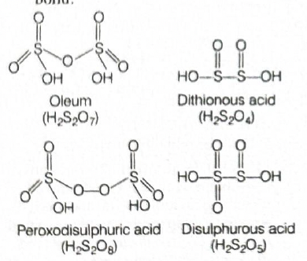
The image is especially useful here because this question is
really about identifying the connecting bond present in each
structure.
Step-by-step explanation
This is a structural identification question.
We do not solve it by formula alone. We solve it by
remembering the characteristic bonding pattern of each
oxo-acid.
\(H_2S_2O_7\) is pyrosulphuric acid, also
called oleum-related acid.
Its structure can be thought of as two sulphur-containing
units joined by one oxygen bridge:
\(S-O-S\)
So this is the correct answer.
Let us compare the others:
\(H_2S_2O_4\) and \(H_2S_2O_5\) are not represented by
an \(S-O-S\) bridge in the standard forms used here.
\(H_2S_2O_8\) is peroxodisulphuric acid and contains an
\(O-O\) peroxide linkage.
Therefore only \(H_2S_2O_7\) contains the
required \(S-O-S\) bond.
Concept used / theory behind it
This belongs to the oxo-acids of sulphur, a very common
memory-and-structure topic.
\(O-O\) bond \(\rightarrow\)
peroxo-acid such as \(H_2S_2O_8\)
\(S-S\) bond appears in some other
sulphur oxyacids, not here as the required answer
Many exam questions simply ask you to identify which acid
contains peroxide bond, which contains bridge oxygen, or
which contains sulphur-sulphur linkage.
Why the correct option is right
\(H_2S_2O_7\) has a bridging oxygen atom between the two
sulphur atoms.
So it directly contains the \(S-O-S\) bond asked in the
question.
Hence option (c) is correct.
Why the other options are wrong
\(H_2S_2O_8\) is a trap because it has a
special bond, but that bond is \(O-O\), not \(S-O-S\).
\(H_2S_2O_4\) and
\(H_2S_2O_5\) do not fit the required
bridge-oxygen pattern asked here.
Explanation: Nitrogen (II) oxide means nitric
oxide, \(NO\). Copper with dilute nitric acid gives \(NO\) as
one of the reduction products of nitric acid. In contrast,
copper with concentrated nitric acid usually gives \(NO_2\), and
zinc with nitric acid can give other nitrogen oxides depending
on conditions. Therefore the correct option is (a).
Important reaction set
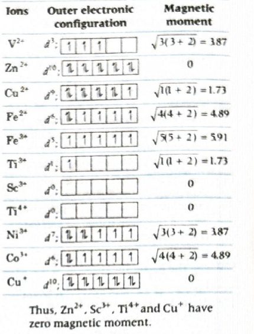
The image lays out the comparison nicely and helps prevent
confusion between dilute and concentrated nitric acid
products.
Step-by-step explanation
The phrase nitrogen (II) oxide means the
oxidation state of nitrogen is \(+2\).
The oxide of nitrogen with nitrogen in \(+2\) oxidation
state is:
\(NO\) (nitric oxide)
Now look at the reactions of metals with nitric acid.
Zinc behaves differently and can give products like
\(N_2O\), \(NO\), or \(NO_2\) depending on conditions, but
the standard reaction highlighted here for the asked product
is copper with dilute nitric acid.
So the correct answer is (a).
Concept used / theory behind it
Nitric acid is a strong oxidizing agent.
Its reduction product depends on:
the metal used
the concentration of nitric acid
reaction conditions
A very standard memory trend is:
Cu + dilute \(HNO_3 \rightarrow NO\)
Cu + concentrated \(HNO_3 \rightarrow NO_2\)
This is one of the most commonly asked reaction patterns in
p-block and general inorganic chemistry.
Why the correct option is right
Only option (a) is the standard reaction
that gives nitric oxide \((NO)\), which is nitrogen (II)
oxide.
Hence option (a) is correct.
Why the other options are wrong
(b) gives \(NO_2\), where nitrogen is in
\(+4\) oxidation state.
(c) and (d) do not match
the standard asked case for \(NO\) as shown in the given
comparison set.
The main trap is confusing \(NO\) with \(NO_2\).
Exam tip / shortcut / elimination clue
Memorize this pair exactly:
Cu + dilute \(HNO_3 \rightarrow NO\)
Cu + concentrated \(HNO_3 \rightarrow NO_2\)
If the question says nitrogen (II) oxide, immediately
translate it to \(NO\), then the answer becomes much easier.
Final result
The reaction giving nitrogen (II) oxide is
Cu + dil. \(HNO_3\).
Answer: (a)
Chapter / topic / subtopic
Chapter: p-Block Elements
Topic: Nitric acid reactions
Subtopic: Oxidizing nature of \(HNO_3\) and nitrogen oxide
products
Explanation: All three given pairs are
correctly matched. Chlorine is used in the preparation of
phosgene, iodine pentoxide is used for estimation of carbon
monoxide, and ozone is used as a disinfectant and germicide.
Therefore A, B, and C are all correct.
Step-by-step explanation
Let us check each pair separately.
A. \(Cl_2\) — Preparation of phosgene
This is correct. Phosgene \((COCl_2)\) is prepared from
carbon monoxide and chlorine:
\(CO + Cl_2 \rightarrow COCl_2\)
So chlorine is indeed used in the preparation of phosgene.
B. \(I_2O_5\) — Estimation of CO
This is also correct. Iodine pentoxide oxidizes carbon
monoxide to carbon dioxide:
\(5CO + I_2O_5 \rightarrow I_2 + 5CO_2\)
Because the reaction is clean and measurable, it is used in
estimation of carbon monoxide in gaseous samples.
C. \(O_3\) — Disinfectant
This is correct too. Ozone is a strong oxidizing agent and
is used as:
disinfectant
germicide
water sterilizing agent
So all three pairs are correct.
Concept used / theory behind it
This is a practical-uses question from p-block chemistry.
Many such questions test whether you remember standard
applications of common substances.
High-yield facts here are:
\(Cl_2\) participates in phosgene formation
\(I_2O_5\) is used in CO estimation because it oxidizes
CO to \(CO_2\)
\(O_3\) is used as disinfectant due to its strong
oxidizing nature
These are direct memory points, but the chemistry behind
them is oxidation and industrial utility.
Why the correct option is right
Since A, B, and C are all correct, the correct answer is
(a) A, B, C.
Why the other options are wrong
(b) is wrong because C is also correct.
(c) is wrong because A is also correct.
(d) is wrong because B is also correct.
Exam tip / shortcut / elimination clue
Memorize these standard application pairs:
\(I_2O_5 \rightarrow\) estimation of CO
\(O_3 \rightarrow\) disinfectant / sterilization
\(Cl_2 \rightarrow\) preparation of phosgene
If all three look familiar and chemically sensible, do not
over-eliminate.
Final result
All three pairs are correctly matched.
Answer: (a) A, B, C
Chapter / topic / subtopic
Chapter: p-Block Elements
Topic: Uses of chlorine, ozone, and iodine compounds
Subtopic: Practical applications and industrial uses
Explanation: An ion will have zero magnetic
moment only when it has no unpaired electrons. So this question
is really asking: among the given ions, which ones are
completely paired?
Step-by-step explanation
Magnetic moment in coordination-free ions is mainly due to
unpaired electrons.
If number of unpaired electrons \(n = 0\), then magnetic
moment becomes zero.
So we inspect the electronic configuration of each ion,
especially the \(d\)-electron count.
Check each ion one by one
\(\mathrm{V}\) is \(23\): \(\mathrm{V = (Ar)\,3d^3 4s^2}\).
\(\mathrm{V^{2+}}\) loses two \(4s\) electrons \(\rightarrow
(Ar)\,3d^3\). It has 3 unpaired electrons, so magnetic
moment is not zero.
\(\mathrm{Zn}\) is \(30\): \(\mathrm{Zn =
(Ar)\,3d^{10}4s^2}\). \(\mathrm{Zn^{2+}}\rightarrow
(Ar)\,3d^{10}\). All electrons are paired, so magnetic
moment is zero.
\(\mathrm{Cu}\) is \(29\): \(\mathrm{Cu =
(Ar)\,3d^{10}4s^1}\). \(\mathrm{Cu^{2+}}\rightarrow
(Ar)\,3d^9\). One electron remains unpaired, so magnetic
moment is not zero.
\(\mathrm{Fe}\) is \(26\): \(\mathrm{Fe = (Ar)\,3d^6
4s^2}\). \(\mathrm{Fe^{2+}}\rightarrow (Ar)\,3d^6\). This
has unpaired electrons, so magnetic moment is not zero.
\(\mathrm{Fe^{3+}}\rightarrow (Ar)\,3d^5\). Half-filled
\(d^5\) has 5 unpaired electrons, so magnetic moment is not
zero.
\(\mathrm{Ti}\) is \(22\): \(\mathrm{Ti = (Ar)\,3d^2
4s^2}\). \(\mathrm{Ti^{3+}}\rightarrow (Ar)\,3d^1\). One
unpaired electron is present, so magnetic moment is not
zero.
\(\mathrm{Sc}\) is \(21\): \(\mathrm{Sc = (Ar)\,3d^1
4s^2}\). \(\mathrm{Sc^{3+}}\rightarrow (Ar)\,3d^0\). No
unpaired electrons, so magnetic moment is zero.
\(\mathrm{Ti^{4+}}\rightarrow (Ar)\,3d^0\). Again no
unpaired electrons, so magnetic moment is zero.
\(\mathrm{Ni}\) is \(28\): \(\mathrm{Ni = (Ar)\,3d^8
4s^2}\). \(\mathrm{Ni^{3+}}\rightarrow (Ar)\,3d^7\). It has
unpaired electrons, so magnetic moment is not zero.
\(\mathrm{Co}\) is \(27\): \(\mathrm{Co = (Ar)\,3d^7
4s^2}\). \(\mathrm{Co^{3+}}\rightarrow (Ar)\,3d^6\). It has
unpaired electrons, so magnetic moment is not zero.
\(\mathrm{Cu^{+}}\rightarrow (Ar)\,3d^{10}\). All electrons
are paired, so magnetic moment is zero.
Concept used / theory behind it
Magnetism depends on unpaired electrons.
\(d^0\) and \(d^{10}\) configurations are always diamagnetic
because they contain no unpaired electrons.
For transition-metal ions, electrons are removed first from
\(4s\) and then from \(3d\).
This is the main exam idea tested here: first write the
correct ionic configuration, then count unpaired electrons.
Why the correct option is right
The ions with zero magnetic moment are:
\(\mathrm{Zn^{2+}} \rightarrow 3d^{10}\)
\(\mathrm{Sc^{3+}} \rightarrow 3d^0\)
\(\mathrm{Ti^{4+}} \rightarrow 3d^0\)
\(\mathrm{Cu^{+}} \rightarrow 3d^{10}\)
Total \(= 4\).
Why the other options are wrong
Options (b), (c), and (d) give wrong counts because they
miss one of the \(d^0\) or \(d^{10}\) ions, or incorrectly
assume ions like \(\mathrm{Ti^{3+}}\), \(\mathrm{Cu^{2+}}\),
or \(\mathrm{Fe^{3+}}\) are diamagnetic.
Exam tip / shortcut / elimination clue
In such questions, first look for ions that become \(d^0\)
or \(d^{10}\). Those are your quickest zero-magnetic-moment
cases.
Common safe picks: \(\mathrm{Sc^{3+}}\),
\(\mathrm{Ti^{4+}}\), \(\mathrm{Zn^{2+}}\),
\(\mathrm{Cu^{+}}\).
Final result
Number of ions having zero magnetic moment \(= 4\).
Chapter / topic / subtopic
Chapter: \(d\)- and \(f\)-Block Elements / Coordination
Compounds
Topic: Magnetic properties of transition elements
Subtopic: Electronic configuration and unpaired electrons in
ions
Explanation: In \(\mathrm{(Co(NH_3)_6)^{3+}}\),
cobalt is in the \(+3\) oxidation state, so \(\mathrm{Co^{3+}}\)
has configuration \(3d^6\). Because \(\mathrm{NH_3}\) acts as a
strong-field ligand in this case, the \(3d\) electrons pair up,
giving an inner orbital octahedral complex with \(d^2sp^3\)
hybridisation and no unpaired electrons.
Orbital arrangement of \(\mathrm{(Co(NH_3)_6)^{3+}}\)
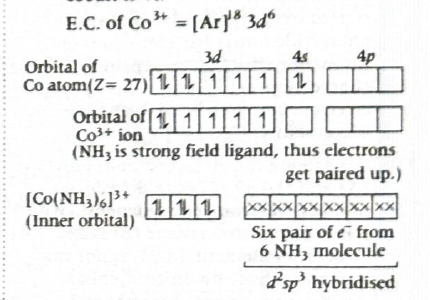
Step-by-step explanation
First find the oxidation state of cobalt in
\(\mathrm{(Co(NH_3)_6)^{3+}}\).
\(\mathrm{NH_3}\) is a neutral ligand, so:
Oxidation state of Co \(= +3\)
Now write the electronic configuration of cobalt atom:
\(\mathrm{Co} = (Ar)\,3d^7 4s^2\)
For \(\mathrm{Co^{3+}}\), remove two \(4s\) electrons and
one \(3d\) electron:
\(\mathrm{Co^{3+}} = (Ar)\,3d^6\)
This complex is octahedral because six \(\mathrm{NH_3}\)
ligands are attached.
For octahedral complexes, there are two possibilities:
inner orbital complex: \(d^2sp^3\)
outer orbital complex: \(sp^3d^2\)
Here \(\mathrm{NH_3}\) with \(\mathrm{Co^{3+}}\) causes
pairing of electrons in the \(3d\) orbitals.
So two \(3d\) orbitals become vacant and are used in
hybridisation.
Hence hybridisation is \(d^2sp^3\), which means it is an
inner orbital complex.
After pairing, all six \(d\)-electrons are paired, so the
number of unpaired electrons is zero.
Concept used / theory behind it
In coordination compounds, hybridisation and magnetic nature
depend on:
oxidation state of the metal ion,
nature of ligand,
whether pairing occurs or not.
An octahedral complex can be:
Inner orbital complex: uses \((n-1)d\)
orbitals, so hybridisation is \(d^2sp^3\)
Outer orbital complex: uses \(nd\)
orbitals, so hybridisation is \(sp^3d^2\)
When electrons pair up in the inner \(3d\) set, the complex
becomes low spin and often diamagnetic.
\(\mathrm{Co^{3+}}\) is a relatively high-charge ion, so
ligand splitting becomes large. This favors pairing more
strongly than in many \(+2\) ions.
Why the correct option is right
\(\mathrm{Co^{3+}} = 3d^6\)
Octahedral field with pairing gives:
\(t_{2g}^6 e_g^0\)
All electrons are paired, so the complex is diamagnetic.
Thus:
Hybridisation \(= d^2sp^3\)
Type \(= \) inner orbital complex
Unpaired electrons \(= 0\)
Why other options are wrong
(b) is wrong because \(sp^3d^2\) means
outer orbital complex, but this complex is not outer orbital
here. Also 3 unpaired electrons is incorrect for
\(\mathrm{Co^{3+}}\) with strong pairing.
(c) is wrong because although \(d^2sp^3\)
is correct, the number of unpaired electrons is not two; it
is zero.
(d) is wrong because zero unpaired
electrons is correct, but the hybridisation is not
\(sp^3d^2\); it is \(d^2sp^3\).
Exam tip / shortcut / elimination clue
For \(\mathrm{Co^{3+}}\), first remember \(3d^6\).
Then check whether ligand field is strong enough for
pairing. In common board and entrance-exam treatment,
\(\mathrm{(Co(NH_3)_6)^{3+}}\) is taken as a low-spin inner
orbital complex.
Once electrons pair, octahedral \(d^6\) becomes a very easy
case: \(d^2sp^3\), diamagnetic, zero unpaired electrons.
Final result
\(\mathrm{(Co(NH_3)_6)^{3+}}\) is an inner orbital
octahedral complex with \(d^2sp^3\) hybridisation and zero
unpaired electrons.
Chapter / topic / subtopic
Chapter: Coordination Compounds
Topic: Hybridisation, magnetic nature and inner/outer
orbital complexes
Subtopic: Octahedral complexes of \(d^6\) metal ions
Explanation: All three statements are correct.
Glyptal is formed from ethylene glycol and phthalic acid,
Bakelite is widely used in electrical fittings such as switches
because it is a good insulator, and nylon-2-nylon-6 is a
biodegradable polymer.
Formation of Glyptal from its monomers
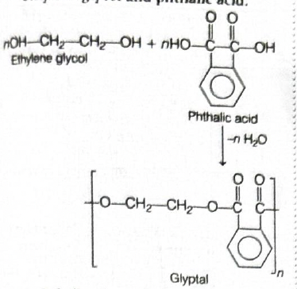
Step-by-step explanation
This is a direct memory-based polymers question, but the
safest way is to verify each statement separately.
Statement A: Glyptal is made from ethylene
glycol and phthalic acid.
This is correct.
Glyptal is a polyester.
It is formed by condensation polymerisation between:
ethylene glycol \((\mathrm{HO-CH_2-CH_2-OH})\)
phthalic acid
During polymerisation, water molecules are eliminated,
and ester linkages are formed.
Statement B: Bakelite is used in making
electrical switches.
This is also correct.
Bakelite is a thermosetting polymer.
It is hard, heat-resistant, and a poor conductor of
electricity.
Because of these properties, it is used in electrical
switches, plugs, handles of utensils, and similar
household items.
Statement C: Nylon 2-nylon-6 is a
biodegradable polymer.
This is correct in the standard NCERT classification.
Nylon-2-nylon-6 is an alternating polyamide copolymer.
It is obtained from glycine and amino caproic acid.
Because of peptide-like amide linkages that can be
attacked biologically, it is considered biodegradable.
Concept used / theory behind it
Questions from polymers often test three things:
monomer \(\rightarrow\) polymer matching,
important uses of commercial polymers,
special classification such as biodegradable polymers.
Glyptal is a condensation polymer and a
polyester.
Bakelite is a phenol-formaldehyde resin and
is thermosetting.
Nylon-2-nylon-6 is one of the standard
examples of biodegradable polymer asked in entrance exams.
Why the correct option is right
Since A is correct, B is correct, and C is also correct, the
only suitable option is (a) A, B, C.
Why other options are wrong
(b) A and C only is wrong because B is also
correct.
(c) A and B only is wrong because C is also
correct.
(d) B and C only is wrong because A is also
correct.
Explanation: The vitamin described here is
vitamin D. It is fat-soluble, found in sources such as egg yolk
and fish, and can also be formed in the body on exposure to
sunlight. Deficiency of vitamin D causes rickets.
Step-by-step explanation
The clue words in the question are:
fat soluble
source is egg yolk
Among vitamins, the fat-soluble ones are:
Vitamin A
Vitamin D
Vitamin E
Vitamin K
Egg yolk is a common source associated with vitamin D.
Deficiency of vitamin D leads to weak bone formation.
In children, this causes rickets.
Concept used / theory behind it
Vitamin D helps in proper absorption and metabolism of
calcium and phosphorus.
Without enough vitamin D, bones do not mineralise properly.
This leads to soft and weak bones.
In growing children, the deficiency disease is called
rickets.
In adults, a related condition is osteomalacia.
Why the correct option is right
Vitamin D matches both clues:
fat-soluble vitamin
present in egg yolk
Its deficiency causes rickets, so option (d) is correct.
Why other options are wrong
(a) scurvy is caused by deficiency of
vitamin C, not vitamin D.
(b) convulsions are not the standard
deficiency disease asked here for vitamin D in this
syllabus-style question.
(c) xerophthalmia is caused by deficiency
of vitamin A.
Exam tip / shortcut / elimination clue
Memorise a few classic vitamin-deficiency pairs:
Vitamin A \(\rightarrow\) xerophthalmia
Vitamin C \(\rightarrow\) scurvy
Vitamin D \(\rightarrow\) rickets
If the question mentions fat-soluble vitamin + egg yolk +
sunlight, quickly think of vitamin D.
Final result
Vitamin \(X\) is vitamin D, and its deficiency causes
rickets.
Chapter / topic / subtopic
Chapter: Biomolecules / Vitamins
Topic: Vitamins and deficiency diseases
Subtopic: Fat-soluble vitamins and vitamin D deficiency
Explanation: Tranquilizers are drugs that
reduce mental tension, anxiety, irritability, and emotional
stress. Among the given pairs, valium and serotonin are
associated with tranquilizing action, so option (b) is correct.
Step-by-step explanation
This is a direct identification question from Chemistry in
Everyday Life.
The easiest way is to classify each pair by drug type.
Valium is a well-known tranquilizer.
Serotonin is linked with mood regulation,
and in this syllabus-style classification it is grouped with
tranquilizing action.
So the pair that acts as tranquilizers is
valium and serotonin.
Concept used / theory behind it
Tranquilizers are chemicals used to treat stress, anxiety,
and some mental disorders.
They calm the central nervous system and help maintain
emotional balance.
Examples commonly mentioned in entrance-level chemistry
include:
Equanil
Valium
Serotonin-related mood control context
This chapter often tests classification of drugs into:
tranquilizers,
analgesics,
antihistamines,
antacids,
antimicrobials.
Why the correct option is right
Valium is directly known as a tranquilizer.
Serotonin is associated with mood and calming effects in the
standard exam context used here.
Therefore option (b) matches the required
category.
Why other options are wrong
(a) heroin, codeine are narcotic
analgesic-type drugs, not tranquilizers.
(c) dimetapp, seldane are associated with
antihistamine-type action, not tranquilizers.
(d) cimetidine, ranitidine are antacids /
anti-ulcer drugs, not tranquilizers.
Exam tip / shortcut / elimination clue
Memorise one famous example for each drug class:
Valium \(\rightarrow\) tranquilizer
Aspirin \(\rightarrow\) analgesic
Ranitidine \(\rightarrow\) antacid / anti-ulcer
Seldane \(\rightarrow\) antihistamine
If you know valium, the answer becomes immediate.
Final result
The pair of drugs acting as tranquilizers is
valium and serotonin.
Explanation: Since the alkyl halide
\(\mathrm{C_4H_9Br}\) undergoes \(S_N2\) reaction, it must be a
primary alkyl bromide. So \(X\) is \(n\)-butyl bromide,
\(\mathrm{CH_3CH_2CH_2CH_2Br}\). On treatment with
\(\mathrm{Mg/dry\ ether}\), it forms the Grignard reagent
\(\mathrm{CH_3CH_2CH_2CH_2MgBr}\), which on hydrolysis with
\(\mathrm{D_2O}\) gives \(\mathrm{CH_3CH_2CH_2CH_2D}\). Hence
option (b) is correct.
Step-by-step explanation
The molecular formula is \(\mathrm{C_4H_9Br}\), so possible
isomers include:
\(n\)-butyl bromide
sec-butyl bromide
isobutyl bromide
tert-butyl bromide
The question says the alkyl halide undergoes
\(S_N2\) reaction.
\(S_N2\) is favored by less hindered alkyl halides,
especially primary halides.
Tertiary alkyl halides do not undergo \(S_N2\) easily
because backside attack is blocked.
Among the given \(\mathrm{C_4H_9Br}\) isomers, the expected
\(S_N2\)-friendly one is \(n\)-butyl bromide:
\(\mathrm{CH_3CH_2CH_2CH_2Br}\)
Now reaction with magnesium in dry ether forms a Grignard
reagent:
(a) gives an alcohol-type \(\mathrm{OD}\)
product. That is not formed here because \(\mathrm{D_2O}\)
protonates the Grignard carbon; it does not convert the
alkyl halide into alcohol in this sequence.
(c) shows a tert-butyl deuterated product,
but tertiary alkyl bromide does not fit the \(S_N2\) clue.
(d) again shows an
\(\mathrm{OD}\)-containing alcohol-type product, which is
not the result of simple Grignard quenching with
\(\mathrm{D_2O}\).
Explanation: The assertion has the \(pK_a\)
values reversed. Actually, phenol has \(pK_a \approx 10\), while
benzoic acid has \(pK_a \approx 4.19\). The reason statement is
correct because benzoate ion is more resonance-stabilised by
equivalent structures, whereas phenoxide ion has non-equivalent
resonance forms. This greater stabilisation makes benzoic acid
stronger than phenol.
Step-by-step explanation
First check the numerical fact in the assertion.
The standard acidity values are:
Phenol: \(pK_a \approx 10\)
Benzoic acid: \(pK_a \approx 4.19\)
But the assertion says:
phenol \(= 4.19\)
benzoic acid \(= 10\)
So the assertion is false.
Now examine the reason.
Acid strength depends on the stability of the conjugate
base.
Benzoic acid forms benzoate ion after losing
\(\mathrm{H^+}\).
In benzoate ion, the negative charge is delocalised over two
oxygen atoms through equivalent resonance structures.
This gives strong stabilisation.
Phenol forms phenoxide ion after losing \(\mathrm{H^+}\).
In phenoxide ion, the negative charge can resonate into the
aromatic ring, but these resonance structures are
non-equivalent and place charge partly on less
electronegative carbon atoms.
So phenoxide ion is less stabilised than benzoate ion.
Therefore the reason statement is true.
Concept used / theory behind it
Lower \(pK_a\) means stronger acid.
So benzoic acid with \(pK_a \approx 4.19\) is much stronger
than phenol with \(pK_a \approx 10\).
The key idea is conjugate base stability.
Benzoate ion is strongly stabilised because
the negative charge is delocalised mainly over oxygen atoms,
and the important resonance forms are equivalent.
Phenoxide ion is resonance-stabilised too,
but some resonance forms place negative charge on carbon,
which is less electronegative than oxygen. So the
stabilisation is less effective.
Hence benzoic acid is more acidic than phenol.
Why the correct option is right
Assertion is false because the \(pK_a\) values are
interchanged.
Reason is true because the resonance comparison given is
chemically correct.
Therefore the correct choice is (d).
Why other options are wrong
(a) is wrong because the assertion is not
true.
(b) is wrong because again the assertion is
false.
(c) is wrong because the reason is not
false; it is true.
Exam tip / shortcut / elimination clue
Remember one quick acidity benchmark:
carboxylic acids are much stronger acids than phenols
So if a question says phenol has lower \(pK_a\) than benzoic
acid, it is immediately suspicious.
Also remember:
equivalent resonance over oxygen atoms \(\rightarrow\)
stronger conjugate base stabilisation
Final result
Phenol has \(pK_a \approx 10\), benzoic acid has \(pK_a
\approx 4.19\).
Explanation: We must check which
reactant–reagent pairs actually give benzaldehyde
\((\mathrm{C_6H_5CHO})\). Pair A is correct because benzoyl
chloride on Rosenmund reduction gives benzaldehyde. Pair D is
also correct because benzonitrile on partial reduction with
\(\mathrm{AlH(t-Bu)_2}\) followed by hydrolysis gives
benzaldehyde. Pairs B and C do not give benzaldehyde.
Key reaction paths for the given pairs
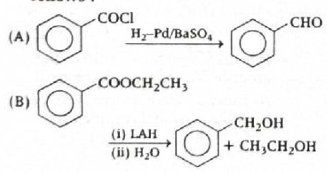
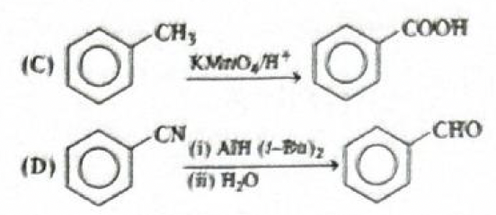
Step-by-step explanation
This question is best solved by checking each reaction
separately.
Pair A: Benzoyl chloride
\((\mathrm{C_6H_5COCl})\) with \(\mathrm{H_2/Pd-BaSO_4}\)
This is Rosenmund reduction.
Acid chlorides on Rosenmund reduction are converted to
aldehydes.
Explanation: The alkene \(\mathrm{C_4H_8}\)
that does not show geometrical isomerism is but-1-ene,
\(\mathrm{CH_2{=}CHCH_2CH_3}\). On hydration with
\(\mathrm{H_2O/H^+}\), it gives butan-2-ol, and on passing its
vapours over Cu at \(573\ \mathrm{K}\), the secondary alcohol is
dehydrogenated to butan-2-one. Since butan-2-one is a methyl
ketone \((\mathrm{CH_3CO-})\), it gives the iodoform test. Hence
option (c) is correct.
Conversion of \(X\) into the iodoform-positive product
\(Y\)
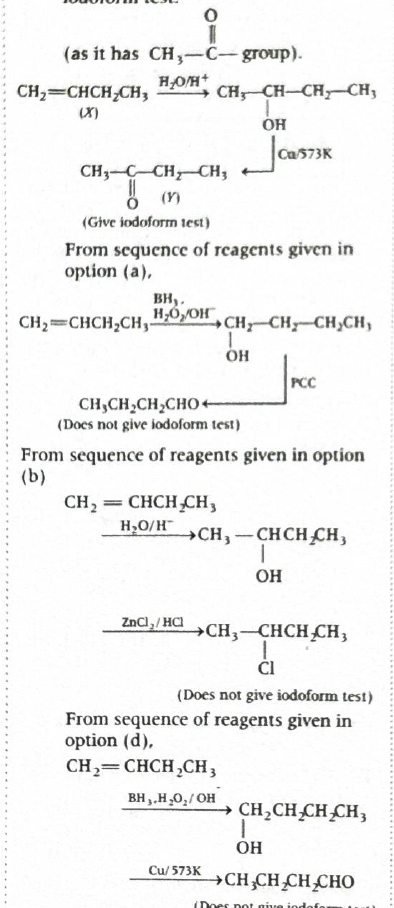
Step-by-step explanation
First identify the alkene \(X\).
The molecular formula is \(\mathrm{C_4H_8}\), so possible
alkenes are:
but-1-ene \(\mathrm{(CH_2{=}CHCH_2CH_3)}\)
but-2-ene \(\mathrm{(CH_3CH{=}CHCH_3)}\)
2-methylpropene \(\mathrm{((CH_3)_2C{=}CH_2)}\)
The question says \(X\) does not exhibit
geometrical isomerism.
But-2-ene shows cis-trans isomerism, so it is ruled out.
From the attached solution and the reaction flow, the
intended alkene is but-1-ene:
\(\mathrm{X = CH_2{=}CHCH_2CH_3}\)
Now test the reagent sequences.
Option (c): \(\mathrm{H_2O/H^+}\) followed by
\(\mathrm{Cu/573\ K}\)
Acid-catalysed hydration of but-1-ene follows
Markovnikov addition.
Explanation: Option (b) is feasible because PCC
oxidises a primary alcohol to an aldehyde without
over-oxidation. Thus \(\mathrm{CH_3CH{=}CHCH_2OH}\) is converted
into \(\mathrm{CH_3CH{=}CHCHO}\). The other reactions are not
feasible for the reasons given below.
Step-by-step explanation
We must examine each option separately and ask whether the
shown reagent can really give the shown product.
Option (a)
The reactant is phenol reacting with \(\mathrm{SOCl_2}\)
to form chlorobenzene.
This conversion does not occur normally in this way.
\(\mathrm{SOCl_2}\) converts alcohols into alkyl
chlorides mainly through a substitution process that
works at an \(\mathrm{sp^3}\)-hybridised carbon bearing
the \(\mathrm{-OH}\) group.
In phenol, the carbon attached to \(\mathrm{-OH}\) is
part of an aromatic ring and is
\(\mathrm{sp^2}\)-hybridised.
So phenol does not give chlorobenzene with
\(\mathrm{SOCl_2}\).
Option (b)
The reactant is \(\mathrm{CH_3CH{=}CHCH_2OH}\), an
unsaturated primary alcohol.
PCC \((\)pyridinium chlorochromate\()\) is a mild
oxidising agent.
It oxidises primary alcohols to aldehydes and usually
stops there.
Explanation: First, p-methyl aniline
is diazotised at \(273\ \mathrm{K}\) to form the diazonium salt.
Then the diazonium group is replaced by \(\mathrm{CN}\) using
\(\mathrm{CuCN/KCN}\) in the Sandmeyer-type cyanation step,
giving p-methyl benzonitrile. Finally, hydrolysis of
the nitrile gives p-methyl benzoic acid. Therefore
option (c) is correct.
Reaction sequence from p-methyl aniline to
p-methyl benzoic acid
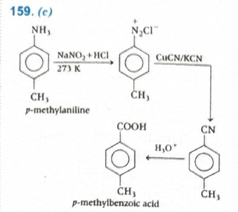
Step-by-step explanation
The starting compound is p-methyl aniline, which
has:
an \(\mathrm{-NH_2}\) group on benzene
a \(\mathrm{-CH_3}\) group para to it
We need to convert it into p-methyl benzoic acid.
The methyl group must remain on the ring, and the amino
group must ultimately become \(\mathrm{-COOH}\).
A direct \(\mathrm{-NH_2 \rightarrow -COOH}\) conversion is
not done in one step, so we look for a standard aromatic
amine sequence.
Step 1: Diazotisation
Primary aromatic amines react with \(\mathrm{NaNO_2 +
HCl}\) at \(273\)–\(278\ \mathrm{K}\) to give diazonium
salts.
This exactly converts p-methyl aniline into
p-methyl benzoic acid.
Why other options are wrong
(a) starts with oxidation by
\(\mathrm{KMnO_4/H^+}\), which would attack the methyl side
chain before the required diazonium-based conversion route.
(b) converts the diazonium salt into the
corresponding chloride using \(\mathrm{Cu/HCl}\), not into
the nitrile needed for later hydrolysis to acid.
(d) is wrong because diazotisation is not
done at \(285\ \mathrm{K}\) in the standard stable way, and
simple \(\mathrm{KCN}\) is not the correct reagent set here
for the intended aromatic diazonium substitution step.
Exam tip / shortcut / elimination clue
For aromatic amine to carboxylic acid conversions, remember
this very useful route:
Explanation: If an amine reacts with
p-toluene sulphonyl chloride and gives a sulphonamide
insoluble in alkali, the amine must be a secondary amine.
Therefore \(X\) is a secondary amine. On reaction with benzoyl
chloride, a secondary amine forms an \(N,N\)-disubstituted
amide. Among the given options, that matches option (d).
Identification of \(X\) from Hinsberg test and its
benzoylation product
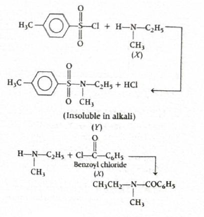
Step-by-step explanation
This question is based on the
Hinsberg test, which is used to distinguish
primary, secondary and tertiary amines.
The reagent is p-toluene sulphonyl chloride.
We are told that the product \(Y\) formed is
insoluble in alkali.
What does that tell us about the amine?
Primary amine: gives sulphonamide
containing an \(\mathrm{N-H}\) hydrogen, so it dissolves
in alkali after forming a salt.
Secondary amine: gives sulphonamide
with no \(\mathrm{N-H}\) hydrogen, so it cannot form a
soluble salt with alkali and remains insoluble.
Tertiary amine: does not form
sulphonamide in the same way because it lacks
\(\mathrm{N-H}\).
Therefore \(X\) must be a secondary amine.
From the solution image, the intended amine is ethyl methyl
amine:
\(\mathrm{CH_3CH_2NHCH_3}\)
Now react this secondary amine with benzoyl chloride
\(\mathrm{(C_6H_5COCl)}\).
Secondary amines undergo benzoylation to form amides: